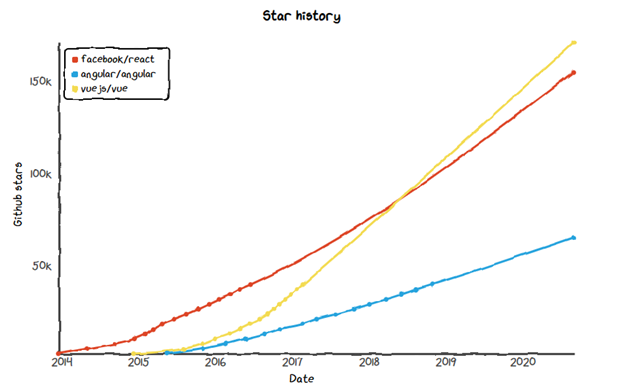

Angular for now but what about new versions and compatibilities ? Is it broken each time ? Which version ? 11 released in november 2020, will be replaced in May 2021 but will be kept under LTS until May 2022
Would it be easier to use Vue.js or React ?

Alternatives:
More or less the same functionalities, probably easier to stay on angular at first
| Angular | React | Vue.js | |
|---|---|---|---|
| Maintained by | |||
| pros | Lots of functionnalities out of the box | Extensive built-in capabilities | |
| Convenient to refactor old code | Really Light | ||
| Better reusability of components | Convenient to use | ||
| cons | High threshold of entry | Not a complete framework but instead alibray, more time consuming. 3rd party tools might become outdates, adds cost to development | Runtime errors frequent and frustrating (linked to convenience of usage) |
| Lot of conceptual overhead / Considered a bit over-engineered |
https://sloboda-studio.com/blog/the-ultimate-comparison-angular-vs-react-vs-vue/
https://itnext.io/dont-be-afraid-and-just-ng-update-1ad096147640
Clean code should not be too much of an issue to maintain. Angular updates happend regularly, at fixed times and aren't too much breaking. Google is known for closing projects, yet Angular has a big user base and is MIT-licensed so it should be fine.
No real outcomer, choice might end up being based on personal preferences. It would be interesting to build the next version in Vue.js to see both approaches.
Angular handles SCSS natively. SCSS extends the capabilities of CSS. What can it do ? https://sass-lang.com/guide. License MIT
SCSS provides inheritance, variables & operators. This can come in handy to make the CSS much cleaner. DRY (Don't Repeat Yourself) philosophy.
How to learn : https://learnxinyminutes.com/docs/sass/
Summary of advantages of SCSS : no overhead work (already well-handled), more readability, intuitive to understand (no formation required it seems), cleaner CSS.
Complicated choice, lots of possibilities, should test them on personal projects before deciding.
They often provide similar capabilities. I'm currently hesitating between Bulma (fresher & lighter, gaining lot of momentum, no JS) and Boostrap (more users but can be considered a bit bland, requires JQuery)
ngx-bootstrap / ng-bootstrap : two different teams working on similar goals, making Bootstrap usable without jQuery for angular / couldn't get ngx to work and ng isn't working with Angular 11
Material Design ? Not sure if this is adapted, looks modern but takes a lot of space. Material Design Lite as an alternative
-> From the nanospace-client-lib README, bootstrap might be required for displaying (
The use of SVGs is suitable : robust, easy to create / edit programmatically. Adding annotations is a bit more problematic : text positionning in SVG can be tricky. A first solution is to use absolute positionning and DIV elements. This is a first solution
The next question is "how to make it scalable?", this seems doable using JavaScript.
Popper.js, handles tool-tips positioning and overflowing for us, open source (included in bootstrap.bundle.min.js), used by BS for dropdowns menus
ngx-nanospace-client-lib depends on '@fortawesome/free-solid-svg-icons' et '@fortawesome/angular-fontawesome' this is open-source yet they have pro plans and such. Are we allowed to release something using these ? #TODO understand TOS
installation : ng add @fortawesome/free-solid-svg-icons @fortawesome/angular-fontawesome ngx-nanospace-client-lib #TODO move this to some README /!\ REALLY IMPORTANT /!\ : Don't ever forget to import FormsModule along with nanospace-client-lib if you don't want an useless error message haunt you for way too long. Refer to ngx-nanospace-client-lib README and strictly follow it!
To test: Alternatively, we can use foreign elements inside the SVG (https://stackoverflow.com/questions/6725288/svg-text-inside-rect)
All fine, some issues with positioning for ultra-wide monitors.
There was the idea of using a sidebar to show calculation at all times. At first, tried to add a column but too complex, not possible to use as a component. Tried implementing it with classic HTML, some result but not ideal I think.
ng-sidebar exists but not actively maintained.
angular-material has sidenav which seems to fit the use case.
-> Next : Clarify the need, is there another way to show it ? more adapted than a navbar
Also this sidebar isn't responsive. #FIXME: add responsiveness to sidebar
Units: Two ways to represent units, with each its perks. I'll probably put a global variable somewhere allowing to switch from one to another while I'm not sure.
Also should an input field be a component ? (https://dev.to/tsuzukayama/angular-5---how-many-components-is-too-many-components--2l9c). These inputs require setting a unit and some logic so it might be a good idea to make it into a component.
On a side note, I think building the forms from .json assets would be interesting. This adds reusability and would result in probably cleaner components for a small added complexity
==
In angular there are two techniques to create forms : template-driven and reactive.
| Template-Driven | Reactive |
|---|---|
| Asynchronous | Mostly Synchronous |
| Logic driving by template | Logic in component |
| Legacy | Modern |
| Limited to e2e tests | Form validation can be unit tested |
| adapted to small/medium forms | A bit overkill for small forms |
(reference: https://blog.angular-university.io/introduction-to-angular-2-forms-template-driven-vs-model-driven/)
From this comparison, it appears clear that Reactive is the way to go as it is more adapted for complex forms.
==
The data is split into many sub-forms. I started to implement it before stumbling upon this example which corresponds to our goal: https://itnext.io/partial-reactive-form-with-angular-components-443ca06d8419 https://coryrylan.com/blog/building-reusable-forms-in-angular https://medium.com/angular-in-depth/angular-nested-reactive-forms-using-cvas-b394ba2e5d0d (composite Control Value Accessors)
This will require a bit more thought than initially expected. The main solutions for this would be:
The child-parent solutions would have some impact on the layout. It would also become really confusing real quick with these chains of @Inputs/@Outputs.
Using services seems like the obvious solution after some comparison. However using RxJs is not simple.
Merging Observables : https://github.com/ReactiveX/rxjs/issues/1308
https://angular.io/guide/dynamic-form
-> ArrayForms handles multiple FormGroup thus allowing to get notified from each change in forms.
Next problem : Routing destroys components. We have to make form data persistent. Ideas :
https://github.com/angular/angular/issues/5275 -> see RouteReuseStrategy / Sticky routes https://samerabdelkafi.wordpress.com/2020/12/14/angular-rout-with-sticky-state/ https://medium.com/@disane1987/angular-router-and-tab-based-navigation-within-a-spa-c0a8ca2b3bc4 This can be handled more easily by UI-Router library
Finally have something working for the form, maybe a bit convoluted, should compare with other frameworks
How to handle data not entered ?
We cannot guess, in the future persistance of data, possibility to import. Right now maybe some generic data automatically inputed to save time when using the interface.
In the end, all data will be known, whether the components are created or not
Here goes some ideas for next iteration of the interface